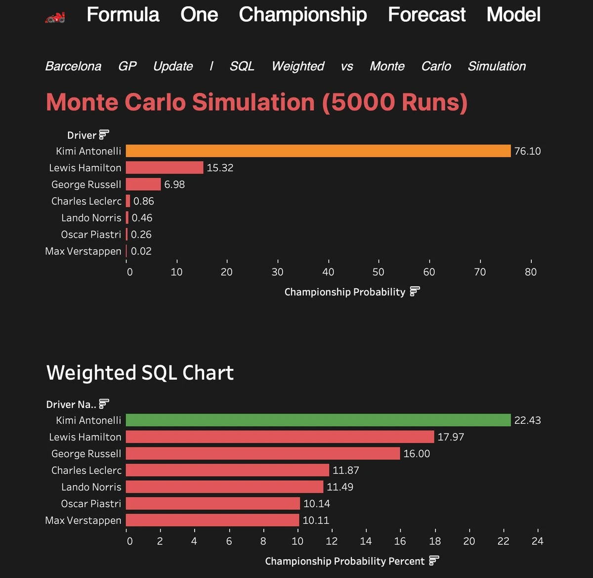

F1 2026 Championship Forecast
Forecasting the 2026 title race two ways, and letting the methods argue with each other.

- 5,000Monte Carlo season runs
- 2models compared side by side
- LiveTableau dashboard
The question
A championship runs over a noisy season, and a season under new rules is harder still. A single prediction hides the range, and different modelling choices can tell very different stories. How wide is the uncertainty?
What I did
- Used the Kaggle Ergast archive as the historical base and prepared it with SQL.
- Ran a Monte Carlo simulation in Python: 5,000 possible seasons.
- Built a second, weighted SQL model to compare against it.
- Compared both in a Tableau dashboard after the Barcelona GP update.
What I found
- The methods disagree, and that is the point. Monte Carlo concentrates the title on one driver at about 76%, while the weighted model spreads it much wider, with the leader in the low 20s.
- Seeing where they diverge is more honest than trusting a single forecast.
How to read it
These are probabilities as of the Barcelona GP update, not predictions of who wins, and they move with every race. The simulation uses the current standings, an assumed average of points per race, 14 races left and an 18% chance of a DNF, and it covers seven drivers only. Independent project using public data, not affiliated with or endorsed by Formula 1.
- Monte Carlo
- BigQuery SQL
- Python
- Tableau
- Forecasting
